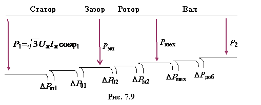

Для анализа потерь энергии (активной
мощности) в АД, при преобразовании отбираемой из сети электрической энергии в
полезную механическую на валу, строят энергетическую диаграмму (рис. 7.9).
|  |
Электрическая мощность, потребляемая АД из сети,
(7.8)
частично расходуется на потери в стали статора (от вихревых токов и явления гистерезиса) и на тепловые потери в меди (в обмотках статора), оставшаяся часть мощности передаётся ротору посредством электромагнитного поля:
.
В свою очередь, электромагнитная мощность Рэм частично расходуется на потери в меди ротора (потери в стали ΔP2 ротора незначительные вследствие низкой частоты тока I2), оставшаяся часть мощности преобразуется в механическую мощность Рмех двигателя
(см. рис. 7.9).
Полезную мощность на валу двигателя Р2 получим, если из механической мощности вычтем механические потери ΔРмех (потери в подшипниках, вентиляционные) и добавочные потери ΔРдоб (пульсационные).